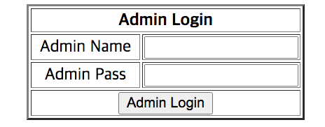
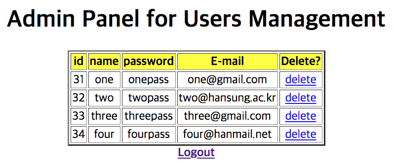

PHP Login, logout and registration with MySQL
다음의 예는 database 에 등록된 사용자들의 login 을 허용하는 웹사이트 구축입니다.
필요한 웹페이지들은
- login.php : form 으로부터 사용자 정보를 입력받아 users_db.users 의 사용자 목록과 비교하여, 있으면 content.php 로, 새로운 사용자는 registration.php 를 통해서 등록 후 login.php 를 통해서 content.php 로 이동
- logout.php :
- registration.php :
- content.php; : 실제 웹사이트 .
- MySQL : database "users_db" 와 table "users"
e.g.) CREATE TABLE users (
id INT NOT NULL AUTO_INCREMENT,
PRIMARY KEY(id),
name varchar(40), pass varchar(40), email varchar(50) ); - Extra (관리도구)
- admin_login.php : 관리자 로그인 페이지
- admin_users.php : 사용자 리스트 표시 및 제거 버튼 제공
- admin_delete.php : 사용자 제거
- admin_logout.php : 관리자 로그 페이지
- MySQL : users_db.admin table
e.g.) CREATE TABLE admin(
id INT NOT NULL AUTO_INCREMENT,
PRIMARY KEY(id),
name varchar(40), pass varchar(40) );
login.php
아래의 코드(login.php)는 사용자로부터 username 과 password 를 입력받아 인증 후 content.php 로 이동한다.
Login.php
<!DOCTYPE html>
<?php
session_start();
$servername = 'localhost';
$dbUsername = 'root';
$dbPassword = '';
$dbName = 'users_db';
$conn = mysqli_connect($servername, $dbUsername, $dbPassword, $dbName);
if (!$conn) {
die("Connection failed: " . mysqli_connect_error());
}
if (isset($_POST['submit'])) {
$username = $_POST['username'];
$password = $_POST['password'];
if (empty($_POST['username'])) {
echo "<script> alert('Please enter your name!')</script>";
}
if (empty($_POST['password'])) {
echo "<script> alert('Please enter your password!')</script>";
}
$query = "SELECT name, pass FROM users WHERE name='$username' AND pass='$password' ";
$result = mysqli_query($conn,$query);
if ( mysqli_num_rows($result) > 0 ) {
$_SESSION['login']=$username;
header("Location: content.php");
} else {
echo "Wrong username or password !";
}
mysqli_close($conn);
}
?>
<html>
<head>
<title> Login Page </title>
</head>
<body style="text-align:center; ">
<form method="post" action="login.php">
<table border="2" align="center">
<tr>
<th colspan="2" align="center"> Login </th>
</tr>
<td width="100"> Username </td>
<td> <input type="text" name="username" > </td>
</tr>
<tr>
<td width="100"> Password </td>
<td> <input type="password" name="password" > </td>
</tr>
<tr>
<td colspan="2" align="center"> <input type="submit" name="submit" value="Login" > </td>
</tr>
</table>
<form>
<b> Not registered yet? <a href="registration.php"> Registeration </a></b>
</body>
</html>
registration.php
아래의 코드(registration.php)는 사용자로부터 username, password 와 email 들를 입력받아 users_db.users 에 저장하고, content.php 로 이동한다.registration.php
<!DOCTYPE html>
<?php
session_start();
$servername = 'localhost';
$dbUsername = 'root';
$dbPassword = '';
$dbName = 'users_db';
$conn = mysqli_connect($servername, $dbUsername, $dbPassword, $dbName);
if (!$conn) {
die("Connection failed: " . mysqli_connect_error());
}
if (isset($_POST['submit'])) {
$username = $_POST['username'];
$password = $_POST['password'];
$email = $_POST['email'];
if (empty($_POST['username']) || empty($_POST['password']) || empty($_POST['email'])) {
echo "<script> alert('Please enter all required field!')</script>";
} else {
$query = "SELECT * FROM users WHERE name='$username' OR email='$email' ";
$result = mysqli_query($conn,$query)
if (mysqli_num_rows($result) > 0) {
header("Location: registration.php?MSG=Username:$username or E-mail:$email is already exist, please use another one!");
} else {
$query = "INSERT INTO users (name, pass, email) VALUES ('$username','$password','$email')";
if (mysqli_query($conn,$query)) {
$_SESSION['login']=$username;
header("Location: content.php");
}
}
}
}
mysqli_close($conn);
?>
<html>
<head>
<title> Registration Page </title>
</head>
<body style="text-align:center; ">
<?php
if(isset($_GET['MSG'])) {
echo $_GET['MSG'];
}
?>
<form method="post" action="registration.php">
<table border="2" align="center">
<tr>
<th colspan="2" align="center"> Registration </th>
</tr>
<td width="100"> Username </td>
<td> <input type="text" name="username" > </td>
</tr>
<tr>
<td width="100"> Password </td>
<td> <input type="password" name="password" > </td>
</tr>
<tr>
<td width="100"> E-mail </td>
<td> <input type="text" name="email" > </td>
</tr>
<tr>
<td colspan="2" align="center"> <input type="submit" name="submit" value="Regist" > </td>
</tr>
</table>
<form>
</body>
</html>
logout.php
아래의 코드(logout.php)는 session 을 삭제하고, login.php 로 이동 시킨다 .logout.php
<?php
session_start();
session_destroy();
header('Location: login.php');
?>
content.php
아래의 코드(content.php)는 session 을 살펴보아 로그인 여부를 확인 후에 페이지를 보여준다. 로그인 하지 않은 경우에는 login.php로 이동 한다.content.php
<!DOCTYPE html>
<?php
session_start();
if (!isset($_SESSION['login'])) {
header("Location:
login.php");
}
?>
<html>
<head>
<title> Content Page </title>
</head>
<body>
<h1> Content Page </h1>
<h2> Welcome <?=$_SESSION['login']?> </h2>
<hr>
<b> <a href="./logout.php" align="right"> Logout
</a> </b>
</body>
</html>
admin_login.php
Extra : 아래의 코드(admin_login.php)는 admin 권한으로 로그인 하게 해주며, 성공시 사용자 리스트를 보여준다. (추가로 admin 테이블이 필요)
<?php
?>
?>
admin_users.php
Extra : 아래의 코드(admin_users.php)는 admin 권한으로 로그인한 경우에 users_db.users 테이블 자료를 테이블 형식으로 보여주며, 링크로 사용자 제거가 가능하게 한다.
<?php
?>
?>
admin_delete.php
Extra : 아래의 코드(admin_delete.php)는 users_db.users 테이블에서 전달 받은 id 에 해당하는 레코드를 지우고, admin_users.php를 다시 표시한다. <?php
?>
?>
admin_logout.php
Extra : 아래의 코드(admin_logout.php)는 admin_login.php 실행시에 생성한 session 을 제거하고, admin_login.php를 다시 표시한다. <?php
?>
?>